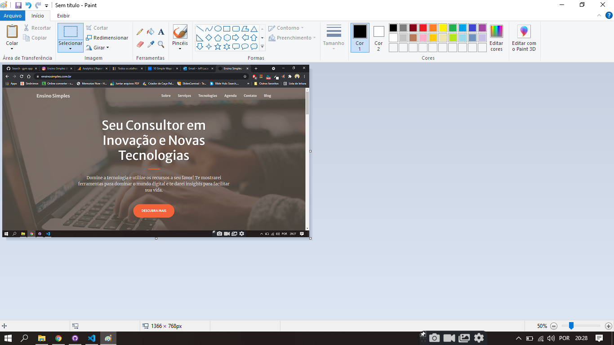
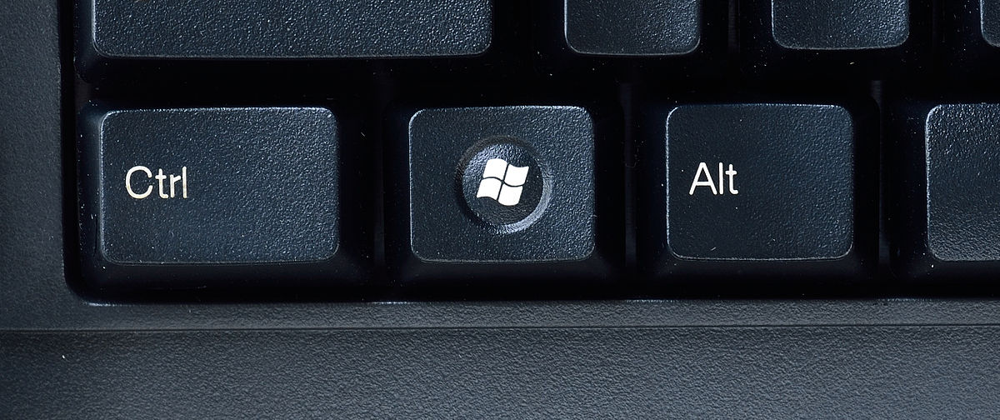
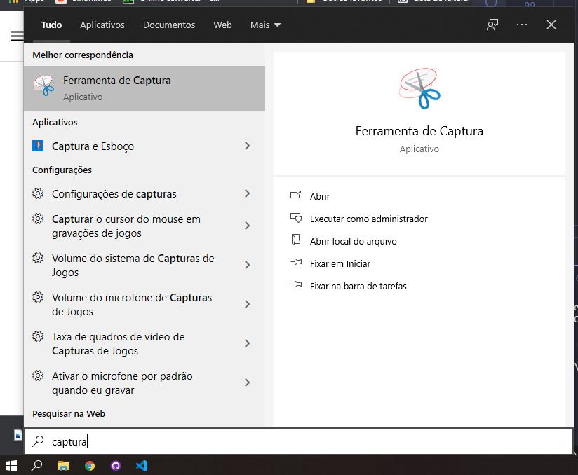
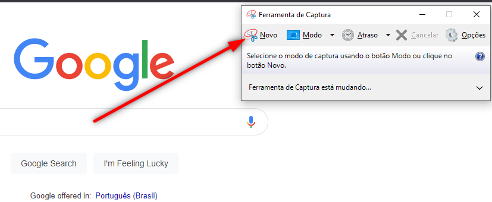

Aposto que um dia você já precisou salvar um conteúdo que apareceu na tela do seu computador, a parte importante de um vídeo, um endereço ou qualquer outra coisa importante mas acabou tendo que anotar em um papel por não saber como fazer, não é?
O Windows 10 tem algumas ferramentas nativas e bem simples que podem te ajudar na tarefa de salvar o que está aparecendo na tela (também conhecido como Print Screen, Screen Shot, ou simplesmente Print).
Mesmo se você quer salvar uma parte do que é mostrado na tela ou a tela inteira, logo abaixo vou te explicar algumas opções para isso.
1. Tecla Print Screen
A maneira mais fácil de tirar uma captura de tela no Windows 10 é pressionar o botão PrtScn - que vem das palavras Print Screen, olha só que legal. Para capturar a tela simplesmente pressione em seu teclado a tecla "PrtScn". Normalmente essa tecla fica do lado superior direito do seu teclado, mas pode variar de fabricante para fabricante.
A captura de tela vai ficar salva em sua área de transferência. Para salvar a imagem, cole (Ctrl + V) a captura de tela em qualquer programa que permita essa opção, por exemplo o Paint.
2. Tecla Windows + PrtScn
Para fazer uma captura de tela no Windows 10 e automaticamente salvar a imagem em um arquivo, aperte simultâneamente a tecla Windows (normalmente próximo ao lado esquerdo da barra de espaço) + a tecla PrtScn.
Sua tela vai escurecer rapidamente e uma captura da sua tela inteira será salva na pasta Capturas de Tela dentro da pasta Imagens.
3. Ferramenta de Captura
Existe no Windows 10 uma ferramenta nativa que pode ser bastante útil. Para encontrá-lo você precisa abrir o menu inicar e digitar "captura".
Com o programa aberto, clique em "Novo", e selecione a parte da tela que você quer capturar.
Você pode salvar a imagem clicando no seu respectivo ícone ou pode simplesmente colar (Ctrl + V) em algum programa que aceite esse comando.
Texto de Jefferson Lucas